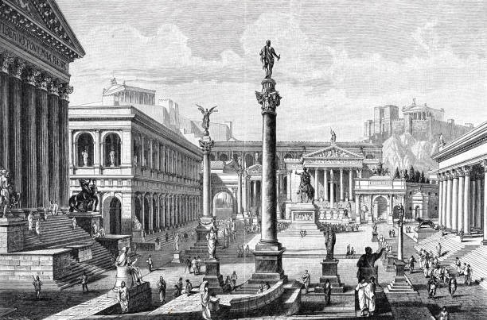
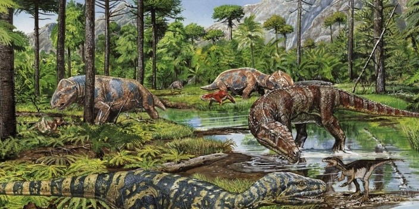

Legnépszerűbb opcióink
Bor, gladiátorok, dekadencia. A történelemkedvelők legkedveltebb megállóhelye, e korban kilátást nyerhet egy gigászi birodalom felemelkedésére, virágzására és hanyatlására.

Bor, gladiátorok, dekadencia. A történelemkedvelők legkedveltebb megállóhelye, e korban kilátást nyerhet egy gigászi birodalom felemelkedésére, virágzására és hanyatlására.

Fedezze fel az óriáshüllők világát eme népszerű opciónkkal. Legyen biológus, vadász vagy olimpiai futó, a Triászi Kor kihívást jelent minden résztvevőnknek.

Nem kell 50 évet várni, hogy megtudd, mit hoz a jövő! Nem tudsz várni a Half-Life 3 megjelenéséig? Találkozni akarsz az ük-ük-unokáiddal? Esetleg a rák ellenszerét szeretnéd? Mindezt megkaphatod a SZUPRÉM tervünkkel!